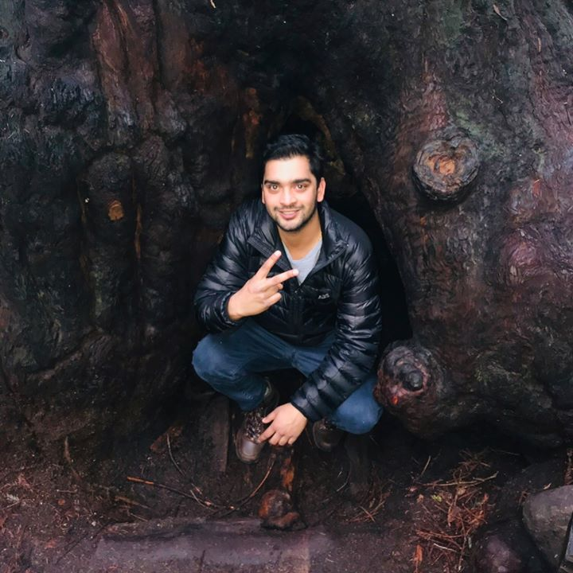

About Me

User advocate, utilizing research and design to develop novel products and services which enrich the human experience. Design thinker, team player, and embrace a go-getter mentality when faced with a problem space. As a lifelong learner, I’m excited to adapt and evolve my tools and methods to provide innovative solutions for human interaction with technology.
To ensure a seamless user experience, I utilize research method's such as interviewing/observations, A/B testing, card sorting, affinity diagraming, cognitive walkthrough, heuristics, & user testing for human-machine interface design. The prototyping tools I engage with for design include paper prototyping, figma, sketch, balsamiq, InDesign, illustrator & photoshop. Currently as a bootcamp student at UC Berkeley, I am building on full stack development skills to provide end-end solutions.